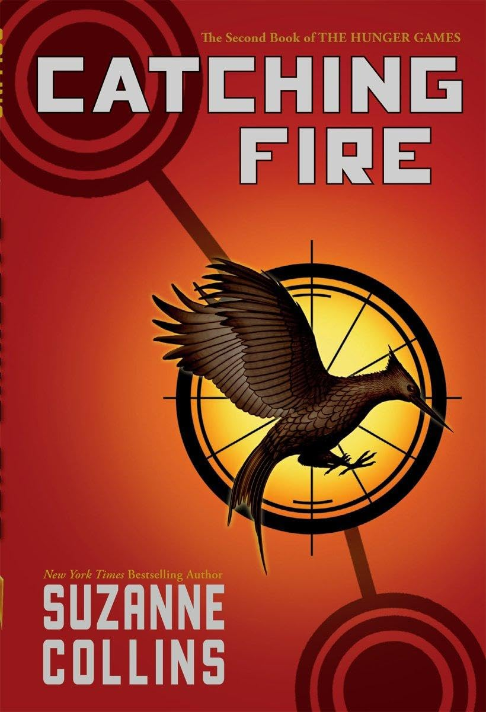

Hunger Games Books
Overview
The Hunger Games series, written by Suzanne Collins, is a thrilling dystopian saga set in the post-apocalyptic nation of Panem. The story follows Katniss Everdeen, a resilient and resourceful young woman, as she navigates a brutal world of survival, rebellion, and political intrigue. The series explores themes of power, sacrifice, and the human spirit in the face of oppression.
Book 1: The Hunger Games

In The Hunger Games, Katniss Everdeen lives in District 12, the poorest of Panem's 12 districts, under the watchful eye of the Capitol. Every year, as a punishment for a past rebellion, the Capitol forces each district to send one boy and one girl to compete in a televised, deadly event known as the Hunger Games. When her younger sister Prim is chosen, Katniss volunteers in her place to protect her. Katniss must navigate the arena, where she faces dangerous terrain, deadly traps, and alliances that may or may not be trusted. Alongside her fellow tribute, Peeta Mellark, she becomes a symbol of rebellion and resistance to the Capitol. As the Games progress, Katniss is forced to make difficult decisions that challenge her moral compass and reveal her growing feelings for Peeta, though she’s also drawn to her childhood friend, Gale.
Book 2: Catching Fire
In Catching Fire, Katniss returns home as a victor of the Hunger Games, but her life is far from normal. Her actions in the arena have sparked unrest across Panem, and President Snow visits her to warn her about the dangerous ripple effect she’s caused. As the 75th Hunger Games, or "Quarter Quell," approaches, a twist in the rules forces past victors to re-enter the arena. Katniss and Peeta must once again fight for their lives, but this time, the stakes are even higher. The new Games present even more deadly obstacles, and Katniss becomes increasingly aware of a growing rebellion led by the districts against the Capitol’s oppression. As alliances shift and betrayals unfold, Katniss must choose where her loyalties lie—and whether to risk everything to help spark a revolution.
Book 3: Mockingjay
In Mockingjay, Katniss has become the face of the revolution against the Capitol. After surviving the horrors of the Hunger Games twice, she’s thrust into the heart of a full-scale war. With District 12 destroyed and her loved ones scattered, Katniss joins the resistance in District 13, which has been quietly planning the overthrow of the Capitol. As the Mockingjay, the symbol of rebellion, Katniss grapples with her role as a pawn in the war, struggling to reconcile her feelings for Peeta and Gale, who have become different versions of the men she once knew. The stakes rise as the final battle for Panem’s future takes shape, and Katniss must confront the devastating costs of war and leadership.